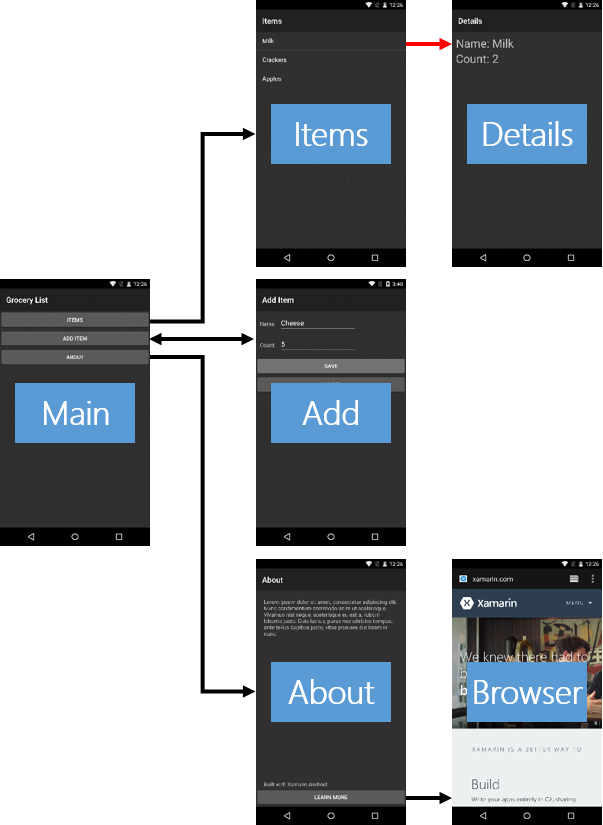

Durée
10 minutes
Objectifs
Ce TP vous montre comment transmettre des arguments à une activité. Vous verrez comment charger les arguments dans l'activité source et comment les récupérer dans l'activité cible. La ligne rouge dans l'image ci-dessous indique la partie de l'application sur laquelle vous allez travailler.
Challenge
Utilisez les recommendations ci-dessous pour réaliser l'exercice.
- Ouvrez ItemsActivity.cs.
- Au sein de la méthode
OnItemClick, créez un Intent qui naviguera vers l'activité Details. - Chargez la position l'élément cliqué au sein des Extras de l'Intent.
- Appelez
StartActivitypassez le à l'Intent. - Ouvrez DetailsActivity.cs.
- Au sein de la méthode
OnCreate, retrouvez la position des Extras de l'Intent et assignez à la variable locale nomméeposition. - Exécutez et testez votre application.
Steps
Below are the step-by-step instructions to implement the exercise.
Load Arguments
- Open ItemsActivity.cs.
-
Locate the
OnItemClickmethod. -
Inside
OnItemClick, create an Intent that will navigate the app to the Details Activity. The code is provided below, hidden behind a button. - Load the position of the clicked item into the Intent Extras. Use "ItemPosition" as the key. The code is provided below, hidden behind a button.
-
Call
StartActivityand pass it the Intent.
Retrieve Arguments
- Open DetailsActivity.cs.
-
Locate the
OnCreatemethod. -
The Intent you created to start the Details Activity is available here in a property named
Intent. Retrieve the "ItemPosition" from the Extras of this Intent and assign it to the local variable namedposition. The code is provided below, hidden behind a button.
Test the App
- Run the app.
- Navigate to the Items Activity.
- Touch an item in the list. Verify that the Details Activity launches and displays the item you selected.
Résumé
Dans cette section, vous avez implémenté un scénario classique Master-Detail. L'activité des éléments a fourni la vue principale et l'activité Détails la vue détaillée. Lorsque l'utilisateur a sélectionné un élément dans la vue principale, vous avez navigué dans l'application vers la vue Details et vous avez passé un identifiant d'élément (dans ce cas, vous avez utilisé la position de l'élément dans le modèle de données en tant qu'identifiant). Dans l'activité Détails, vous avez récupéré la position de l'élément et l'avez utilisée pour rechercher le bon élément à afficher. Notez que vous avez transmis un identifiant à la place de l'élément entier - ceci est courant dans Android car les références d'objet ne peuvent pas être utilisées comme arguments d'activité.